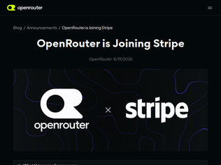
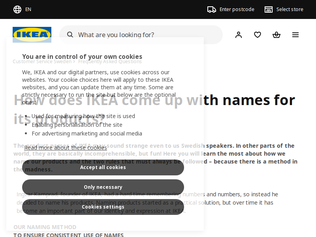

"2 anecdotes about Logitech software:I had a high-end webcam that flickered. There should be switch in the software to switch from 50hz to 60hz that'd fix it but it was nowhere to be found. After digging deeper I found that it was only available in English version of software. It was before macOS had Setting to set language per app, so I had to manually replace Polish bundle with English one through binary.Another one: Has K810 keyboard that started in "FN-by-default" mode. K811, Mac version of said keyboard allowed for changing default setting just as K810 on Windows, but K810 on Mac - no dice. Support told me to shell out 200€ on Mac keyboard so I ended up writing small binary switcher [0] that would run after keyboard got connected [0].[0]: https://github.com/exlee/k810_fkeys_mac"
"For Linux, there is https://github.com/pwr-Solaar/SolaarBut on another note, the genai content on the website is just so distracting and such a bummer. It sticks out like sore thumb."
"Ive been building something very similar to this for Razer deviceshttps://github.com/gh123man/OpenSnekSimilar to other reverse engineering threads ive seen recently, AI is empowering us to replace crappy vendor software with something better.Also - OpenSnek documents a mostly complete bluetooth spec for the Razer vendor protocol which as far as I know, hasn't been done anywhere else yet!"
"This was fascinating, thank you. I expected to read about legal threats against the folks collecting this data and am glad that those didn't materialize.Also I only realized after finishing the article what a breath of fresh air it was to read something that came straight from another human's brain without LLM intermediation. Thank you to the author for that too."
"It's fun to see habhub in an article. ~10 years ago a group of friends and I launched 2 weather balloons for fun with a GPS logger, APRS transmitter, and a few sensors, and then retrieved it afterwards.I have a bunch of memorable experiences from it, including:1. Under inflating the first balloon because our helium provider was closed, and instead buying lower pressure "party" balloon containers (and not realizing until too late that lower pressure meant more helium left in the containers)2. Chasing down the balloon at night and trying to explain why you wanted to walk onto some guys field to check for a weather balloon3. Later calling a gas station to ask if "some guy just arrived with a weather balloon in their truck" when trying to track down the balloonIf anyone has kids and wants a fun project, I highly recommend it. There are a few companies online that sell kits, and it's neat to watch the different layers of the atmosphere (temperature and wind), and try to "chase" after the balloon and find it afterwards."
"I am part of the team which runs the OpenStreetMap.org infrastructure, we also get a lot of weird and wonderful requests / emails. .mil, .gov, .edu and GeoTLD variants.I should really do a write-up sometime."

"I love OpenRouter, long time user. Stripe will hopefully be a good custodian.I just want to point out some features of OpenRouter that make it more than just a model selection and routing endpoint and that I find incredibly useful:0/ Default routing is to the cheapest provider, but they're usually not the most performant. I'd guess 99% of OpenRouter integrations never tweak the default routing. Here you can setup cheapest with performance minimums:https://openrouter.ai/docs/guides/routing/provider-selection...You can also stack model selection in priority1/ Using broadcast you can push all your analytics to clickhouse / s3 / snowflake and a bunch of other compatible destinations. Setup a clickhouse server ($5 VPS[0]) and send all your traces to it:https://openrouter.ai/docs/guides/features/broadcastcustomise your own observability in your dashboards from there. Superwin2/ Model router is also a natural home for llm security - OpenRouter has the beginnings of prompt injection detection:https://openrouter.ai/docs/guides/features/guardrails/prompt...there is also PII detection. This will show up in observability as rejections/blocks etc.There are so many model routing solutions (same with observability, security etc.) but they're all 80% solutions - OpenRouter really rounds out with well implemented features that you need when deploying models at any scale and I gladly pay the toll.[0] not sure if these exist any more but clickhouse is resource efficient"
"Using Open in your company name, when there's nothing about it, should be illegal."
"OpenRouter is great business I agree, but I'm not still convinced how the integrity of providers' models is ensured. In other words, can't the provider serve DSv4 flash advertising it as DSv4 Pro?I'm aware that OpenRouter checks response quality onboarding, and does further checks occasionally, but I'm concerned that it's basically a cat-and-a-mouse problem between the scammers and the detectors. For example, there could be a signal that a specific pattern of requests are from OpenRouter's quality testing bots. Or, they can just route 1% of requests to an inferior model and benefit a small gain, hoping it fits into the statistically allowed margin."
"Specific devices:>At the time of writing, within ~12 months, in 2027, the 2027 Signature, Razr fold, and Razr flip will meet the hardware security requirements and should have official GrapheneOS support. Motorola is currently porting GrapheneOS to their devices.https://news.ycombinator.com/item?id=49038982"
"Are there banking customers in Europe who do not use mobile banking appsAre there European countries that actually force, cf. coerce, banking customers to purchase mobile phones and run corporate mobile operating systemshttps://en.wikipedia.org/wiki/List_of_countries_by_mobile_ba...https://sqmagazine.co.uk/mobile-banking-statistics/One approach is to use one phone (A) for banking and other commercial transactions and use another phone (B) for everything else, e.g., personal communication with friends, family, etc.Phone A can run corporate mobile OSPhone B can run alternative OSArguably, the data collection, surveillance and advertising exposure when using phone A is tolerable if that phone is only used for banking and commerceThe problem arises when someone tries to use a single phone for every general computing purposeIf that phone is running a corporate mobile OS, then that may expose the owner to an excessive amount of data collection, surveillance and, potentially, ads"
"I've never really understood why we chase Android-alikes on mobile platforms instead of trying to build on mainstream Linux. I know some folks in the nix community (nix-on-droid and other projects) have tried to bring us closer to this, but projects like Graphene seem to have a lot of traction."
"Not mentioned: Floating-point parsing and formatting now uses Russ Cox's uscale algorithm.https://research.swtch.com/fphttps://github.com/golang/go/blob/go1.27.0/src/internal/strc..."
"I love how proactive the crypto team is about post quantum. They released https://pkg.go.dev/crypto/mldsa. The lead maintainer Filippo Valsorda wrote a nice piece here[1] to urge the tech world to start deploying good enough versions of post quantum crypto.[1] https://words.filippo.io/crqc-timeline/"
"Brace for a wave of drive-by pull-requests swapping google/uuid [1] out for the now-standard uuid package [2].Kubernetes project will be the first one [3] I guarantee it.[1] https://pkg.go.dev/github.com/google/uuid[2] https://go.dev/pkg/uuid[3] https://github.com/kubernetes/kubernetes/blob/2220c3853a2402...[4] https://github.com/google/uuid/issues/221"
"…of a single company> Researchers analyzed survey data from 7,704 employees at a large healthcare organization.I’ve been remote and worked for remote companies for a long time. In my observation, the well-being is bimodal. The people who adapt well to remote thrive. There are a lot of people who think they’re going to love remote who ultimately flame out from the loneliness, isolation, lack of visual boundaries between work and home life, and lack of externally enforced routine.It’s really sad when the latter happens because it’s almost always someone who was hired for their great work and abilities. Then over time they get drained and you can see that the remote work wasn’t what they expected.It’s basically impossible to predict who will fall into each category at the interview stage, or at least I can’t do it. Prior remote work success (not just experience) is the best indicator but it’s hard to evaluate, too. Some of the most difficult remote hires I’ve worked with had past remote work experience, but it’s only after being hired that you learn they struggled at those companies too."
"Being able to work remotely is like being sentenced to prison and then finding a get-out-of-jail-free card.I always strive to do my best at work and make a good impression. But I have absolutely 0 interest in the product, the mission, the culture, the personal or collective aspirations of owners, shareholders, leaders or "leadership", or who they are as people. I generally like my coworkers and we get along, but that's not worth a 2 hour round trip in the car, or using a public washroom, or eating in a cafeteria, or sitting uncomfortably at a desk all day, or listening to everyone's boring stories.The best part though, is no team building nonsense, no company BBQs or pizza days, no casual Fridays, no boss dropping in for a one on one, no psychos trying to get the energy level up with a "LETS GOOOO TEAM!!"Just doing a good job for good pay and being treated like an adult. I didn't know working could be like this when I was starting out."
"A theory I've proposed that I would love to get scientific evidence for... I would guess that WFH is effectively bimodal. WFH advocates would largely fall into a high performance bucket, and detractors either believe that average employees are low performers and need monitoring or are low performers. This is not social vs anti-social, its wanting to be productive with your time - whether thats the time you spend working, or with family etc. - WFH for high performers: fewer distractions because you can control your environment, less time wasted on commute, less time on non-work communication, etc. More flexibility, better control of your time and space. - WFH for poor performers: No oversight so you choose to work less. You control your environment so you can add distractions - Meetings, TV, social media chores, family, leaving to go do stuff. - Office for high performers: Constant series of distractions you can't control - social conversations, meetings, etc... keeping you from doing work. - Office for low performers: Constant series of distractions you can't control letting you avoid work without repercussion. Meetings, Social time with coworkers, etc I would love any scientific evidence for or against this theory. If anyone has any studies or natural experiments I would love to know about them"
"This is great news! I think people forget how anti-skin cancer protocols even as simple as applying suntan lotion weren't as popular as recent as 50-60 years ago. Lots of "sun children" of the 50s and 60s are now feeling the repercussions of only applying baby oil and are getting hit with lots of melanoma."
"Substantially better link:https://www.merck.com/news/merck-and-moderna-announce-phase-...Still no actual Phase 3 data presented."
"My father is currently dying of malignant melanoma with brain metastasis...I wish this treatment was available a few years ago."
"God I wish they'd back up all of those claims by offering a subscription of Kimi K3 and GLM 5.3, not some outdated GLM 4.7 instance that they then proceed to call a preview model and say that they'll remove it, leaving users only with GPT-OSS 120B which is nigh useless nowadays: https://support.cerebras.net/articles/9996007307-cerebras-co... and https://www.cerebras.ai/pricingGuess they don't care about regular devs atm and are focused only on hardware sales."
"I was hoping to see Cerebras launch something other than GPT-OSS-120b in production this week, especially with GLM4.7 going away.If they could launch Qwen 27b or Deepseek Flash that would be amazing."
"I think the fun takeaway from this is that GPT 5.4 is probably 45B active parameters and GPT 5.6 Sol is closer to 50B."

"Clear and interesting names is extremely good customer experience. Most companies name their products straight from the ERP system, creating incomprehensible codes that sounds like they come from Star Trek.Ikea has pioneered so much within service design (design beyond the actual product). The in-store journey, the self-assembly, the assembly instructions, clear naming, clear product display, in-store restaurant experience. The list goes on.After Ingvar Kamprad retired, he continued travelling the world to do store inspections. Full-day walkthroughs that started in the morning at the loading bay and continued throughout the store. Everything was inspected and a list of follow-up actions was created for the store manager."
"> Every possible product name is carefully checked to avoid undesirable meanings in other languages, political or religious affiliations and fit into our global profile.I present to you "Svalka" wine glasses. Dump", rubbish heap", or easy, promiscuous woman of ill repute in informal Baltic (and Slavic?) slang."
"My favorite is `fejka` for the artificial plant/flower.I think "being as widely-understandable pun as possible" is definitely one of their naming priorities."
"Excellent write up and an enjoyable read! Reminds me of the “good old times” where posts on HN were written by humans and with a specific writing style like yours. You could’ve used a little bit more of geoguessing to narrow down results, or do a brute force visual check on the last hundred or so ;-)"
"For drones and missiles, this technique is known as Terrain Contour Matching. If terrain contour are measured optically, navigation is independent of RF jamming, unlike GNSS.https://en.wikipedia.org/wiki/TERCOM"
"Super fun! Interestingly, this is how JPL was able to significantly reduce the Mars 2020 landing radius on Mars. Cameras onboard take pictures of the terrain and match that to maps to figure out where the lander is. https://www-robotics.jpl.nasa.gov/what-we-do/flight-projects..."

OpenLogi
"2 anecdotes about Logitech software:I had a high-end webcam that flickered. There should be switch in the software to switch from 50hz to 60hz that'd fix it but it was nowhere to be found. After digging deeper I found that it was only available in English version of software. It was before macOS had Setting to set language per app, so I had to manually replace Polish bundle with English one through binary.Another one: Has K810 keyboard that started in "FN-by-default" mode. K811, Mac version of said keyboard allowed for changing default setting just as K810 on Windows, but K810 on Mac - no dice. Support told me to shell out 200€ on Mac keyboard so I ended up writing small binary switcher [0] that would run after keyboard got connected [0].[0]: https://github.com/exlee/k810_fkeys_mac"
"For Linux, there is https://github.com/pwr-Solaar/SolaarBut on another note, the genai content on the website is just so distracting and such a bummer. It sticks out like sore thumb."
"Ive been building something very similar to this for Razer deviceshttps://github.com/gh123man/OpenSnekSimilar to other reverse engineering threads ive seen recently, AI is empowering us to replace crappy vendor software with something better.Also - OpenSnek documents a mostly complete bluetooth spec for the Razer vendor protocol which as far as I know, hasn't been done anywhere else yet!"